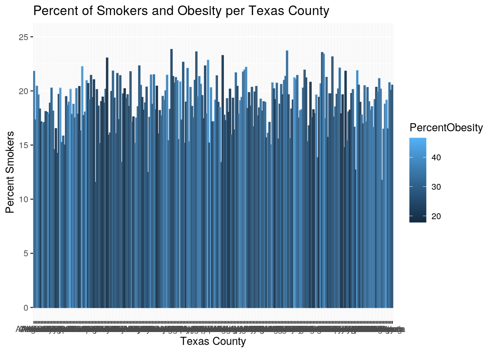
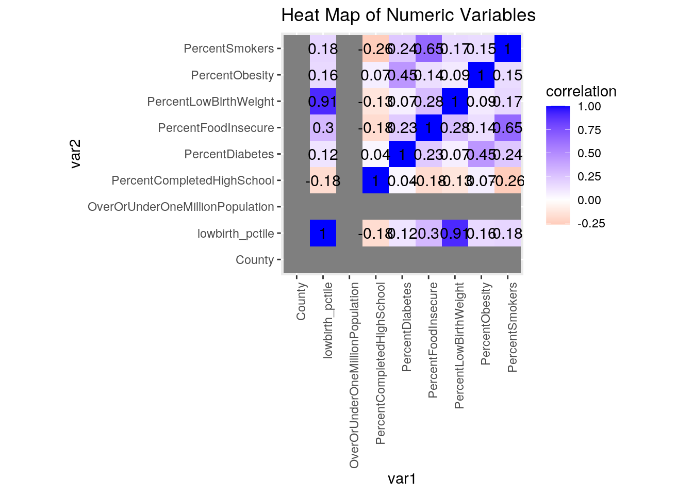
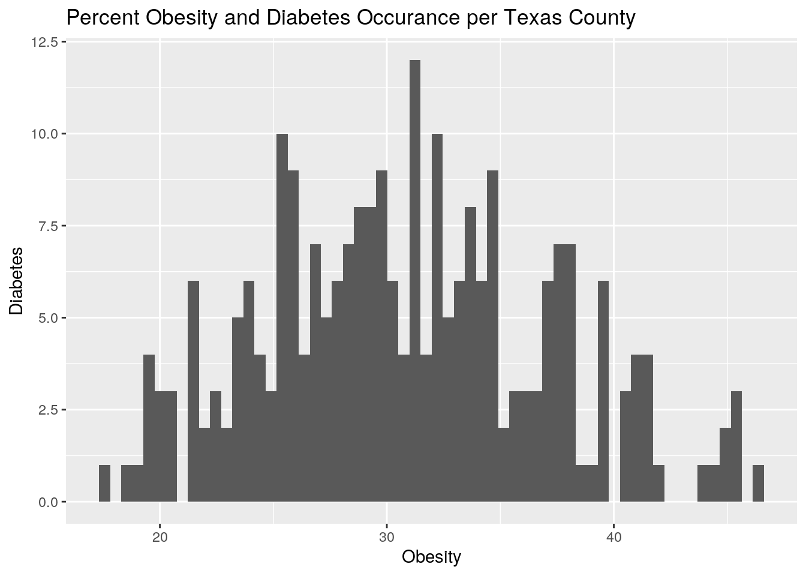
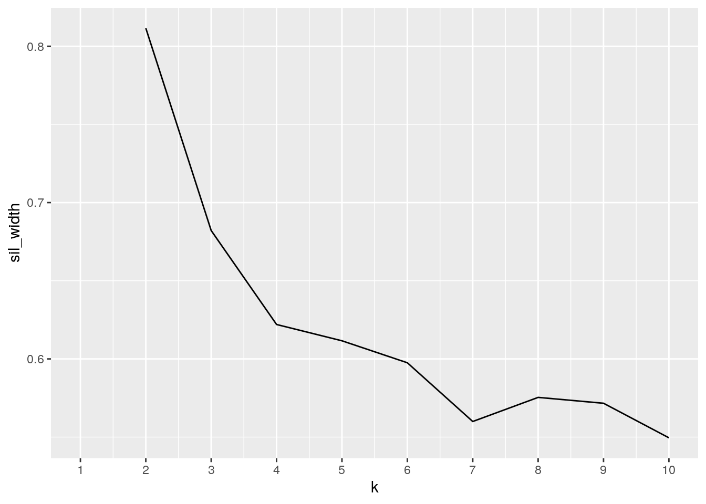
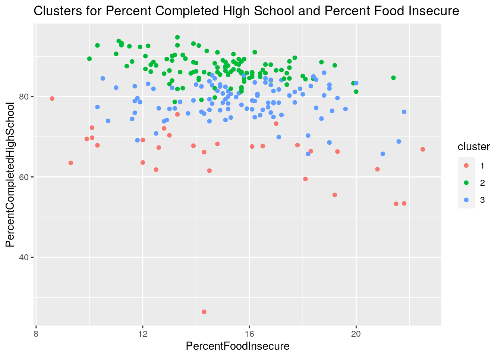

Introduction: The dataset was acquired from country health rankings (https://www.countyhealthrankings.org/app/texas/2021/measure/factors/9/map), it is Texas summary data from 2018 that contains percentages of health concerns, economic statuses, and education status of residents in each Texas county. To keep the data tidy and shorter, I deleted columns that were not of concern/interest. The main data set I gathered from was split and then rejoined, as the data set had several tabs in original excel. The variables in the joined data set are county, percent of residents with diabetes, percent of low birthweight births, percent of obesity among residents, percent smokers, percent completed high school, percent of residents with food insecurity, and population. This combination of variables is of interest to me since socioecomic status tends to be associated with access to both health care and education. I suspect that counties with food insecurity and low high school completion will have worse health outcomes (smoking, obesity, diabetes).
library(tidyverse)
getwd()## [1] "/stor/home/fml368/website1/content/project"library(readxl)
TXDATA1 <- read_xlsx("TXDATA1.xlsx")
TXDATA2 <- read_xlsx("TXDATA2.xlsx")
texasfulljoin <- full_join(TXDATA1, TXDATA2, by = "County")A full join function was performed on TXDATA1 and TXDATA2, this combined them into texasfulljoin. I chose a full join because it retains all the original data and does not drop any rows. All the data in both TXDATA1 and TXDATA2 were of use for this project, making full join the best join option over the rest. I began by filtering so that the set only includes diabetes rates that are less than 20 percent, as there were very few data points above that I suspect are outliers. I then arranged the dataset by percent food insecure. I proceeded by selecting to put the PercentObesity and PercentDiabetes columns together and before other columns since I suspect that the variables are associated. I then used the groupby function to group PercentFoodInsecure by the categorical variable OverOrUnderOneMillionPopulation. I then mutated to create a new column that LowBirthWeight percentile.
texasfulljoin <- texasfulljoin %>% filter(PercentDiabetes < 20)
texasfulljoin <- texasfulljoin %>% arrange(PercentFoodInsecure)
texasfulljoin <- texasfulljoin %>% select(PercentObesity, PercentDiabetes,
everything())
texasfulljoin %>% group_by(OverOrUnderOneMillionPopulation) %>%
summarize(mean_PercentFoodInsecure = mean(PercentFoodInsecure,
na.rm = T), sd_PercentFoodInsecure = sd(PercentFoodInsecure,
na.rm = T))## # A tibble: 2 x 3
## OverOrUnderOneMillionPopulation mean_PercentFoodInsecure sd_PercentFoodInsecu…
## <chr> <dbl> <dbl>
## 1 over 13.9 0.785
## 2 under 15.2 2.63summarize(texasfulljoin)## # A tibble: 1 x 0texasfulljoin %>% mutate_if(is.character, as.factor)## # A tibble: 246 x 8
## PercentObesity PercentDiabetes County PercentLowBirth… PercentSmokers
## <dbl> <dbl> <fct> <dbl> <dbl>
## 1 20.3 6.6 Crane 8.03 15.9
## 2 29.6 11.9 Yoakum 6.44 16.5
## 3 26.3 7.7 Glass… NA 18.2
## 4 21.5 9.9 Sterl… NA 17.9
## 5 31.4 7.4 Andre… 7.03 17.3
## 6 29.1 13.4 Reeves 8.35 17.5
## 7 19.6 5.7 Concho 8.14 19.4
## 8 31 6.2 Martin 7.95 17.7
## 9 30.9 14.1 Rockw… 7.73 13.8
## 10 34.5 5.9 Midla… 8.17 15.0
## # … with 236 more rows, and 3 more variables: PercentCompletedHighSchool <dbl>,
## # PercentFoodInsecure <dbl>, OverOrUnderOneMillionPopulation <fct>texasfulljoin <- texasfulljoin %>% mutate(lowbirth_pctile = ntile(PercentLowBirthWeight,
100))Note that the echo = FALSE parameter was added to the code chunk to prevent printing of the R code that generated the plot.
The mean, standard deviation, variance, quantile, minimum, maximum, and n_dstinct were calculated for all numeric variables. Each numeric variable was grouped by the categorical variable OverOrUnderOneMillion, which states wether or not the texas county has a population of over one million people living in the given county.
I will report the most interesting/significant results. Counties with populations over one million has a higher percentage of high school completion, with over one million counties having a mean of 85 percent completion and under one million counties having a mean of 80 percent high school completion. Besides the PercentLowBirthWeight variable, there was a higher standard deviation for all variables in the under one million category versus the over one million category.
mean(texasfulljoin$PercentCompletedHighSchool)## [1] 80.83189mean(texasfulljoin$PercentLowBirthWeight)## [1] NAmean(texasfulljoin$PercentSmokers)## [1] 18.90694mean(texasfulljoin$PercentObesity)## [1] 30.81748mean(texasfulljoin$PercentDiabetes)## [1] 11.31098mean(texasfulljoin$PercentFoodInsecure)## [1] 15.21057sd(texasfulljoin$PercentCompletedHighSchool)## [1] 8.550493sd(texasfulljoin$PercentLowBirthWeight)## [1] NAsd(texasfulljoin$PercentSmokers)## [1] 2.297557sd(texasfulljoin$PercentObesity)## [1] 6.218732sd(texasfulljoin$PercentDiabetes)## [1] 3.43598sd(texasfulljoin$PercentFoodInsecure)## [1] 2.611882var(texasfulljoin$PercentCompletedHighSchool)## [1] 73.11093var(texasfulljoin$PercentLowBirthWeight)## [1] NAvar(texasfulljoin$PercentSmokers)## [1] 5.278769var(texasfulljoin$PercentObesity)## [1] 38.67263var(texasfulljoin$PercentDiabetes)## [1] 11.80596var(texasfulljoin$PercentFoodInsecure)## [1] 6.821929quantile(texasfulljoin$PercentCompletedHighSchool)## 0% 25% 50% 75% 100%
## 26.43979 76.91453 82.53584 86.18890 94.73684quantile(texasfulljoin$PercentSmokers)## 0% 25% 50% 75% 100%
## 11.54372 17.53677 19.14091 20.43160 23.82233quantile(texasfulljoin$PercentObesity)## 0% 25% 50% 75% 100%
## 17.800 26.100 30.550 34.875 46.600quantile(texasfulljoin$PercentDiabetes)## 0% 25% 50% 75% 100%
## 5.100 8.500 11.100 13.875 19.500quantile(texasfulljoin$PercentFoodInsecure)## 0% 25% 50% 75% 100%
## 8.6 13.3 15.2 16.8 22.5min(texasfulljoin$PercentCompletedHighSchool)## [1] 26.43979min(texasfulljoin$PercentLowBirthWeight)## [1] NAmin(texasfulljoin$PercentSmokers)## [1] 11.54372min(texasfulljoin$PercentObesity)## [1] 17.8min(texasfulljoin$PercentDiabetes)## [1] 5.1min(texasfulljoin$PercentFoodInsecure)## [1] 8.6max(texasfulljoin$PercentCompletedHighSchool)## [1] 94.73684max(texasfulljoin$PercentLowBirthWeight)## [1] NAmax(texasfulljoin$PercentSmokers)## [1] 23.82233max(texasfulljoin$PercentObesity)## [1] 46.6max(texasfulljoin$PercentDiabetes)## [1] 19.5max(texasfulljoin$PercentFoodInsecure)## [1] 22.5n_distinct(texasfulljoin$PercentCompletedHighSchool)## [1] 246n_distinct(texasfulljoin$PercentLowBirthWeight)## [1] 228n_distinct(texasfulljoin$PercentSmokers)## [1] 246n_distinct(texasfulljoin$PercentObesity)## [1] 149n_distinct(texasfulljoin$PercentDiabetes)## [1] 108n_distinct(texasfulljoin$PercentFoodInsecure)## [1] 97texasfulljoin %>% group_by(OverOrUnderOneMillionPopulation) %>%
summarize(mean_PercentObesity = mean(PercentObesity, na.rm = T),
sd_PercentObesity = sd(PercentObesity, na.rm = T))## # A tibble: 2 x 3
## OverOrUnderOneMillionPopulation mean_PercentObesity sd_PercentObesity
## <chr> <dbl> <dbl>
## 1 over 28.4 3.66
## 2 under 30.9 6.25texasfulljoin %>% group_by(OverOrUnderOneMillionPopulation) %>%
summarize(mean_PercentSmokers = mean(PercentSmokers, na.rm = T),
sd_PercentSmokers = sd(PercentSmokers, na.rm = T))## # A tibble: 2 x 3
## OverOrUnderOneMillionPopulation mean_PercentSmokers sd_PercentSmokers
## <chr> <dbl> <dbl>
## 1 over 14.5 1.30
## 2 under 19.0 2.24texasfulljoin %>% group_by(OverOrUnderOneMillionPopulation) %>%
summarize(mean_PercentDiabetes = mean(PercentDiabetes, na.rm = T),
sd_PercentDiabetes = sd(PercentDiabetes, na.rm = T))## # A tibble: 2 x 3
## OverOrUnderOneMillionPopulation mean_PercentDiabetes sd_PercentDiabetes
## <chr> <dbl> <dbl>
## 1 over 9.38 1.69
## 2 under 11.3 3.45texasfulljoin %>% group_by(OverOrUnderOneMillionPopulation) %>%
summarize(mean_PercentFoodInsecure = mean(PercentFoodInsecure,
na.rm = T), sd_PercentFoodInsecure = sd(PercentFoodInsecure,
na.rm = T))## # A tibble: 2 x 3
## OverOrUnderOneMillionPopulation mean_PercentFoodInsecure sd_PercentFoodInsecu…
## <chr> <dbl> <dbl>
## 1 over 13.9 0.785
## 2 under 15.2 2.63texasfulljoin %>% group_by(OverOrUnderOneMillionPopulation) %>%
summarize(mean_PercentLowBirthWeight = mean(PercentLowBirthWeight,
na.rm = T), sd_PercentLowBirthWeight = sd(PercentLowBirthWeight,
na.rm = T))## # A tibble: 2 x 3
## OverOrUnderOneMillionPopulat… mean_PercentLowBirthWeig… sd_PercentLowBirthWei…
## <chr> <dbl> <dbl>
## 1 over 8.42 0.590
## 2 under 8.05 1.35texasfulljoin %>% group_by(OverOrUnderOneMillionPopulation) %>%
summarize(mean_PercentCompletedHighSchool = mean(PercentCompletedHighSchool,
na.rm = T), sd_PercentCompletedHighSchool = sd(PercentCompletedHighSchool,
na.rm = T))## # A tibble: 2 x 3
## OverOrUnderOneMillionPopu… mean_PercentCompletedHigh… sd_PercentCompletedHigh…
## <chr> <dbl> <dbl>
## 1 over 85.3 3.33
## 2 under 80.8 8.59texasfulljoin %>% summarize_if(is.numeric, list(min = min, max = max),
na.rm = T)## # A tibble: 1 x 14
## PercentObesity_… PercentDiabetes… PercentLowBirth… PercentSmokers_…
## <dbl> <dbl> <dbl> <dbl>
## 1 17.8 5.1 4.51 11.5
## # … with 10 more variables: PercentCompletedHighSchool_min <dbl>,
## # PercentFoodInsecure_min <dbl>, lowbirth_pctile_min <int>,
## # PercentObesity_max <dbl>, PercentDiabetes_max <dbl>,
## # PercentLowBirthWeight_max <dbl>, PercentSmokers_max <dbl>,
## # PercentCompletedHighSchool_max <dbl>, PercentFoodInsecure_max <dbl>,
## # lowbirth_pctile_max <int>Graph 1 shows percent obesity and percent smokers per Texas county. Graph 2 shows a heatmap of numeric variables, in which the highest correlation seems to be between percent smokers and percent food insecure (0.65), suggesting that the two are possibly associated. Graph 3 shows the occurance of obesity and diabetes per Texas county, the county with the highest diabetes percentage (about 11.9), has an obesity percentage of about 33 percent.
library(tidyverse)
texasfulljoin2 <- as.data.frame(apply(texasfulljoin, 2, as.numeric))
txmat <- texasfulljoin2 %>% select_if(is.numeric, na.rm=T) %>% cor(use="pair")
ggplot(texasfulljoin, aes(x = County))+
geom_bar(aes(y=PercentSmokers, color= PercentObesity), stat="summary", fun=mean) + scale_y_continuous(lim=c(0,25)) + xlab("Texas County") + ylab("Percent Smokers") + ggtitle("Percent of Smokers and Obesity per Texas County") 
tidytexas <- txmat %>% as.data.frame %>% rownames_to_column("var1") %>%
pivot_longer(-1,names_to="var2",values_to="correlation")
tidytexas%>%ggplot(aes(var1,var2,fill=correlation))+
geom_tile()+ ggtitle("Heat Map of Numeric Variables") +
scale_fill_gradient2(low="red",mid="white",high="blue")+ #makes colors!
geom_text(aes(label=round(correlation,2)),color = "black", size = 4)+ #overlay values
theme(axis.text.x = element_text(angle = 90, hjust=1))+ #flips x-axis labels
coord_fixed() 
ggplot(texasfulljoin, aes(x=PercentObesity, fill=PercentDiabetes)) + geom_histogram(bins=60) + ggtitle("Percent Obesity and Diabetes Occurance per Texas County") + xlab("Obesity") + ylab("Diabetes") 
#PAM CLUSTERING
library(cluster)
texasfulljoin2%>%ungroup()%>%mutate(gmeanFI=mean(PercentFoodInsecure),gmeanHS=mean(PercentCompletedHighSchool))%>%
group_by(gmeanFI,gmeanHS,PercentSmokers)%>%
summarize(meanFI=mean(PercentFoodInsecure), meanHS=mean(PercentCompletedHighSchool),
WSS=sum((PercentFoodInsecure-meanFI)^2+(PercentCompletedHighSchool-meanHS)^2),
BSS=sum((meanFI-gmeanFI)^2+(meanHS-gmeanHS)^2))%>%ungroup()%>%
summarize(BSS=sum(BSS),WSS=sum(WSS))## # A tibble: 1 x 2
## BSS WSS
## <dbl> <dbl>
## 1 19584. 0kmeans1 <- kmeans(texasfulljoin2[!is.na(texasfulljoin2)], 3)
kmeans1## K-means clustering with 3 clusters of sizes 1075, 283, 328
##
## Cluster means:
## [,1]
## 1 13.68819
## 2 34.55895
## 3 80.76208
##
## Clustering vector:
## [1] 1 2 2 1 2 2 1 2 2 2 2 2 2 2 2 2 2 2 2 2 2 2 2 2 2 1 2 2 1 2 1 2 2 2 2 2 2
## [38] 2 2 2 2 2 2 2 1 2 2 1 2 2 2 1 2 1 1 2 2 2 1 2 2 1 1 1 2 1 2 2 2 2 2 2 1 2
## [75] 2 2 2 2 2 2 1 2 2 1 2 2 2 1 2 2 2 1 2 2 2 2 2 2 2 2
## [ reached getOption("max.print") -- omitted 1586 entries ]
##
## Within cluster sum of squares by cluster:
## [1] 28161.12 16855.20 26334.75
## (between_SS / total_SS = 94.1 %)
##
## Available components:
##
## [1] "cluster" "centers" "totss" "withinss" "tot.withinss"
## [6] "betweenss" "size" "iter" "ifault"kmeans1$size## [1] 1075 283 328kmeans1$centers## [,1]
## 1 13.68819
## 2 34.55895
## 3 80.76208kmeans1$cluster## [1] 1 2 2 1 2 2 1 2 2 2 2 2 2 2 2 2 2 2 2 2 2 2 2 2 2 1 2 2 1 2 1 2 2 2 2 2 2
## [38] 2 2 2 2 2 2 2 1 2 2 1 2 2 2 1 2 1 1 2 2 2 1 2 2 1 1 1 2 1 2 2 2 2 2 2 1 2
## [75] 2 2 2 2 2 2 1 2 2 1 2 2 2 1 2 2 2 1 2 2 2 2 2 2 2 2
## [ reached getOption("max.print") -- omitted 1586 entries ]kmeans1$betweenss## [1] 1137002kmeans1$tot.withinss## [1] 71351.07library(cluster)
sil_width<-vector() #empty vector to hold mean sil width
for(i in 2:10){
kms <- kmeans(texasfulljoin2[!is.na(texasfulljoin2)],centers=i) #compute k-means solution
sil <- silhouette(kms$cluster,dist(texasfulljoin2[!is.na(texasfulljoin2)])) #get sil widths
sil_width[i]<-mean(sil[,3]) #take averages (higher is better)
}
ggplot()+geom_line(aes(x=1:10,y=sil_width))+scale_x_continuous(name="k",breaks=1:10)
library(cluster)
pam1 <- texasfulljoin2 %>% pam(k=3)
pam1## Medoids:
## ID PercentObesity PercentDiabetes County PercentLowBirthWeight
## [1,] 3 26.3 7.7 NA NA
## [2,] 85 26.3 11.5 NA NA
## [3,] 145 29.1 10.6 NA NA
## PercentSmokers PercentCompletedHighSchool PercentFoodInsecure
## [1,] 18.18252 69.44758 9.9
## [2,] 19.46779 86.06870 14.3
## [3,] 17.09487 77.93534 15.7
## OverOrUnderOneMillionPopulation lowbirth_pctile
## [1,] NA NA
## [2,] NA NA
## [3,] NA NA
## Clustering vector:
## [1] 1 1 1 2 1 1 1 3 2 3 3 2 3 2 2 2 2 2 2 2 3 3 3 3 3 3 2 3 1 1 2 2 2 3 2 2 3
## [38] 2 1 2 3 3 1 3 1 2 3 2 3 2 1 2 2 2 2 3 2 3 2 2 2 2 1 2 3 2 2 2 3 2 2 1 2 3
## [75] 2 2 2 3 2 2 2 3 3 2 2 1 3 1 2 3 3 1 3 2 3 3 3 3 2 2
## [ reached getOption("max.print") -- omitted 146 entries ]
## Objective function:
## build swap
## 11.99888 11.99888
##
## Available components:
## [1] "medoids" "id.med" "clustering" "objective" "isolation"
## [6] "clusinfo" "silinfo" "diss" "call" "data"pamclust<-texasfulljoin2 %>% mutate(cluster=as.factor(pam1$clustering))
pamclust %>% ggplot(aes(PercentFoodInsecure,PercentCompletedHighSchool,color=cluster)) + geom_point() + ggtitle("Clusters for Percent Completed High School and Percent Food Insecure")
pamclust %>% group_by(cluster) %>% summarize_if(is.numeric,mean,na.rm=T)## # A tibble: 3 x 10
## cluster PercentObesity PercentDiabetes County PercentLowBirth… PercentSmokers
## <fct> <dbl> <dbl> <dbl> <dbl> <dbl>
## 1 1 28.0 9.38 NaN 8.09 19.2
## 2 2 29.2 11.2 NaN 7.90 18.4
## 3 3 33.3 12.0 NaN 8.21 19.3
## # … with 4 more variables: PercentCompletedHighSchool <dbl>,
## # PercentFoodInsecure <dbl>, OverOrUnderOneMillionPopulation <dbl>,
## # lowbirth_pctile <dbl># Pivot and Retidy
texasfulljoin <- texasfulljoin %>% pivot_longer(cols=c("PercentObesity","PercentFoodInsecure"), names_to="PO", values_to="FI")
texasfulljoin <- texasfulljoin%>%
pivot_wider(names_from="PO",values_from="FI")